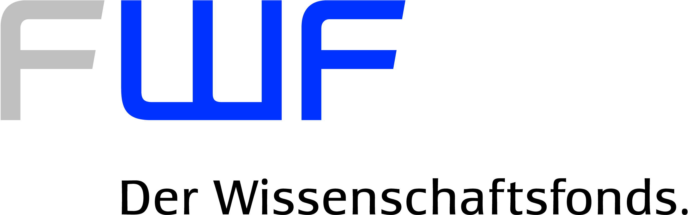
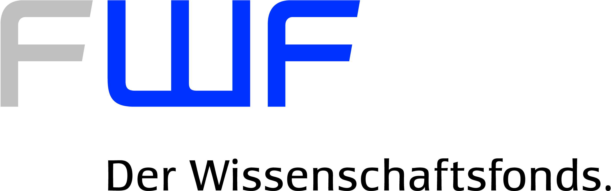

Oceanic islands contribute disproportionately to global biodiversity, hosting many endemic species with unique evolutionary and functional adaptations. Regrettably, islands are epicentres of biodiversity change, particularly vulnerable to anthropogenic disturbances such as habitat loss, climate change, and the introduction of non-native species. The impact of these anthropogenic drivers on islands has far-reaching implications. Therefore, in BioMonI, we work to underscore the importance of oceanic islands and related monitoring efforts at national, regional, and global levels. BioMonI aims to empower local and regional stakeholders by providing standardised monitoring protocols, historical baselines, quantitative estimates, and co-develop future scenarios of Essential Biodiversity Variables (EBVs) and Ecosystem Service Variables (EESVs).


 
